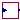

Auxiliary models for implementation of DIgSILENT models
Extends from Modelica.Icons.Package (Icon for standard packages).
| Name | Description |
|---|---|
|  ReactivePowerSupport | Reactive power support for FRT |
| SLDWindV | Dynamic support during faults |
| Controller for the active power of a PV plant |
Reactive power support for FRT
Reactive power support for the DIgSILENT PV model.
| Name | Description |
|---|---|
| iq_max | Maximum d-axis current [1] |
| iq_min | Minimum d-axis current [1] |
| i_EEG | Selection of the FRT Charateristic |
| Deadband | Deadband for dynamic AC voltage support [1] |
| K_FRT | Gain for dynamic AC voltage supports |
| i0 | Initial reactive current [1] |
| Name | Description |
|---|---|
| duac | |
| iq |
Dynamic support during faults
A fault ride through implementation for reactive power support.
| Name | Description |
|---|---|
| Deadband | Deadband for dynamic AC voltage support [1] |
| K_FRT | Gain for dynamic AC voltage supports |
| Name | Description |
|---|---|
| duac | |
| diq |
Controller for the active power of a PV plant
This is essentially a PI controller whose output is reduced during the activation of FRT. PI from Modelica Standard Library was not used due to the specific implementation in PowerFactory which this model follows.
| Name | Description |
|---|---|
| K | Gain of the PI-Controller |
| T | Integration Time Constant of the PI controller [s] |
| yo_min | Minimum d-axis current |
| yo_max | Maximum d-axis current |
| id0 | Initial d-axis current [1] |
| with_I |
| Name | Description |
|---|---|
| yi | |
| yo | |
| pred | |
| yo1 | |
| yo2 | |
| x |